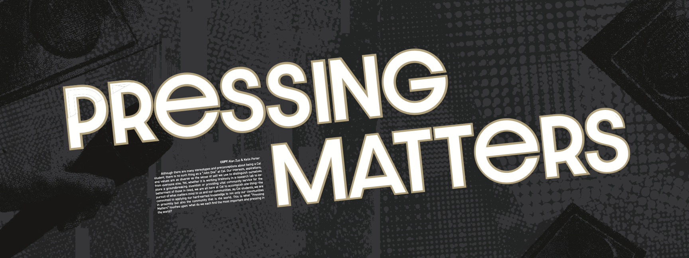
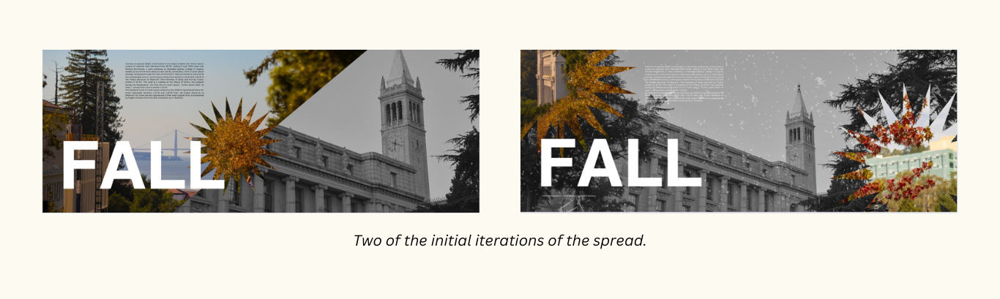
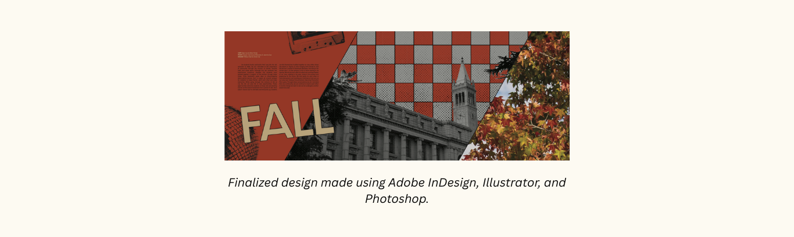
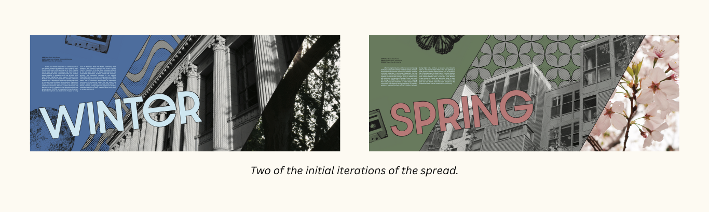

Theme Explanation

Fall Divider

Winter Divider

Spring Divider

Summer Divider

Back to School

QT Ball
Date: June 1, 2024- October 10, 2025
Role: Design Co-Editor, Designer
View some of my designs by scrolling through the images above.
The theme of UC Berkeley’s 2024-25 yearbook is “Pressing Matters.” Inspired by the resurgence of physical media and vintage trends, “Pressing Matters” is a wordplay on vinyl pressings and something being urgent or important to Cal students. This theme focuses on what is important to the Berkeley community at the current moment (ie. current Palestine protests, People’s Park, new chancellor) and reflects on the trends that students engage with. Our goal is to create a book that encapsulates this moment and retains the present impact into the future.
As one of the design editors, I was in charge of creating the book dividers. The goal was to create two pages that served as section dividers that incorporated at least two photos and a copy text that was consistent with our theme. The design also serves as a template for future sections, so the usability as a template was also an important consideration. It was important that these dividers were crafted to as close to perfection as possible because they served as the introductions to the different sections of the yearbook.
I went through about ten iterations of the design before coming to a final design that accomplished all the above points.
I knew that I wanted to incorporate the photos into different shapes to keep with the retro theme that is constant in our style guide, so I was thinking of starbursts or parallelograms. However, after experimenting through several starbursts, I found that the dividers were covered by too many photos, it was distracting to look at. So, I decided to scrap the starbursts and add more solid color, by splitting the page into three sections: solid color, black and white photo of a notable UC Berkeley building, and a colored photo of our campus’ botanicals. I chose these specific categories of photos because I wanted to showcase the connection that students have with the historical, architectural buildings and the plants from nature that change every season. I really wanted to capture the interwovenness of the past with the present, retro nostalgia with trends at the moment.

Next, I experimented with different types of elements to complete the spread. For this step, I used Canva to quickly mess around with halftone dots and checkerboards. I decided to use the checkerboards because its straight structure complements the diagonal divide of the pages. I also added black outlines to all the elements, which really helped make everything look cleaner and tied together. To fill the empty spaces of the solid color, I decided to add halftone elements that complemented the black borders and resonated with our theme.
Once I settled with the prototype of the divider, I used Adobe InDesign and Illustrator to make this idea come alive. I created a checkerboard pattern on Illustrator that allowed me to change the color, that way I can easily change the color later if the exact orange wasn’t made to my liking. Next, I gathered images from Adobe’s stock image collection to use as decorative fill for the entire spread. I used keywords like “halftone,” “retro,” and the image name (for this divider, disco ball and cassette tape) to identify the exact type of image that would fit seamlessly into the design. I placed all these elements into its corresponding sections that I made with a trapezoid shape on InDesign and layered the checkered pattern and halftone dots under the building.
Though this spread took more thought and time, it helped streamline the design process of the next three dividers. I outlined the things that I wanted to keep consistent: text size and angle, theme of photos, halftone dots, and halftone cassette tape. The other elements, like color and pattern of the background would change among the four dividers based on the photos that were taken and the season. Creating this spread made me realize that connection is a core aspect of our theme, not just between people, but between people and the environment. We take so much from our surroundings, but we also need to remember to give our gratitudes and respect back to this Indigenous land. Design is truly an eye-opening experience that allows me to incorporate my Ethnic Studies knowledge into powerful platforms that help amplify voices and ideas.